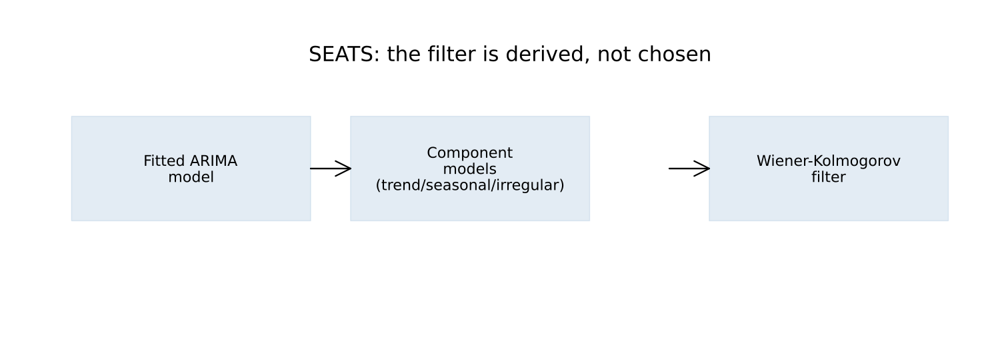
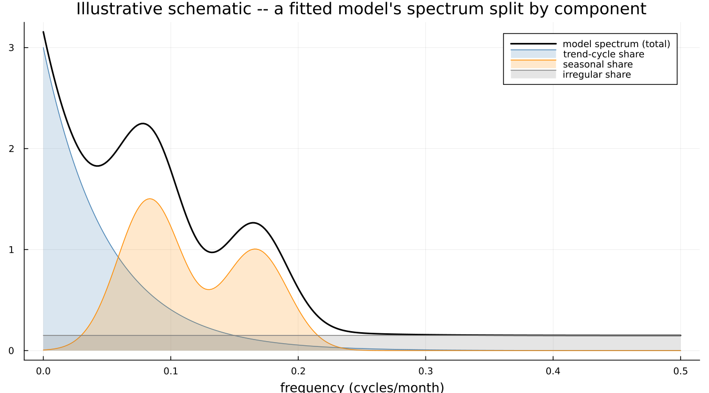
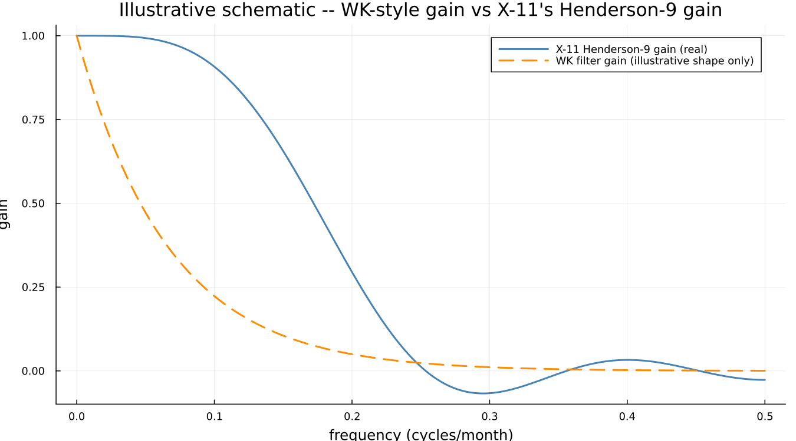

14. Decomposing a Model
14.1 A filter you did not choose
Part II showed X-11 selecting a seasonal filter from a fixed family — 3×3, 3×5, 3×9 — using the moving seasonality ratio to pick a member. The family itself is fixed in advance by the method; the data only picks which member of it applies.
SEATS does not have a family to choose from. It fits an ARIMA model to the series, decomposes that model into component models, and the filter that results falls directly out of the decomposition:

This is the natural question a careful reader of Part II will already have formed: where did X-11's filter families come from, and why those specific ones? X-11's answer is decades of accumulated practice. SEATS' answer is the fitted model itself — two series with genuinely different dynamics get genuinely different filters, not two members drawn from the same fixed list.
14.2 Splitting the model
An ARIMA model implies a specific autocovariance structure, and equivalently a specific spectrum — power distributed across frequencies in a shape the fitted model determines. That spectrum concentrates power at particular frequencies (seasonal ones, especially), and SEATS' decomposition assigns each part of it to a component, each component itself expressible as its own ARIMA model:

This is a labelled illustrative schematic, not the actual spectral decomposition of any specific fitted model — deriving that precisely requires factoring the model's own autocovariance generating function into component pieces, real signal-processing work substantially harder than Part II's filter derivations, and a step this book does not attempt to reproduce numerically. The shape shown is the right idea: trend concentrated at the lowest frequencies, seasonal concentrated in narrow bands at the seasonal harmonics, irregular spread flat across everything.
Under the hood — partial fractions on the autocovariance generating function
The actual derivation factors the model's autocovariance generating function into a sum of terms, each attributable to one component, via partial fractions — a real, well-established technique, and the reason the SEATS decomposition is unique given the fitted model (unlike X-11's own filter choice, which is a selection among alternatives). Dagum & Bianconcini give the full treatment.
14.3 The filter that falls out
Given the component models, the minimum-mean-squared-error filter for extracting each one follows directly — the Wiener-Kolmogorov filter. Comparing its general shape against X-11's own real, computed Henderson-9 gain (Chapter 5):

The Henderson-9 curve here is real, taken directly from Chapter 5's own computation. The Wiener-Kolmogorov curve is an illustrative shape only — a smooth, monotonically decaying gain, contrasted against Henderson-9's own non-monotone ripple (the small negative lobe visible past 0.3 cycles per month, the same feature that lets a Henderson filter sharpen a turning point). The qualitative point — a model-derived filter and a criterion-optimised finite filter are two different solutions to a related problem, not the same solution reached two ways — is real; the specific WK curve shown is not derived from a fitted model here.
14.4 When it does not work
The decomposition is not always possible. Some fitted models admit no valid split into components with non-negative spectra — a mathematical requirement for each piece to correspond to a genuine random process — and when that happens SEATS either fails outright or substitutes a nearby model that does admit a valid decomposition. This is controlled by noadmiss, and it has no X-11 analogue whatsoever: X-11 always produces an answer, since it is a fixed procedure applied to data rather than a decomposition that can fail to exist for a given model.
This is a real limitation of the model-based approach, not a software quirk, and is worth stating as plainly as X-11's own accepted limitations were stated in Part II. This package's own default behaviour for noadmiss was not independently confirmed while writing this chapter — flagged here rather than assumed, since R's seasonal package sets its own default explicitly (seats.noadmiss = "yes"), which suggests the binary's own bare default may differ and is worth checking directly before relying on it.
See also: Chapter 6 for X-11's own filter-family convention, the direct contrast this chapter draws throughout. Chapter 15 for what happens when the two methods are run side by side on the same series.